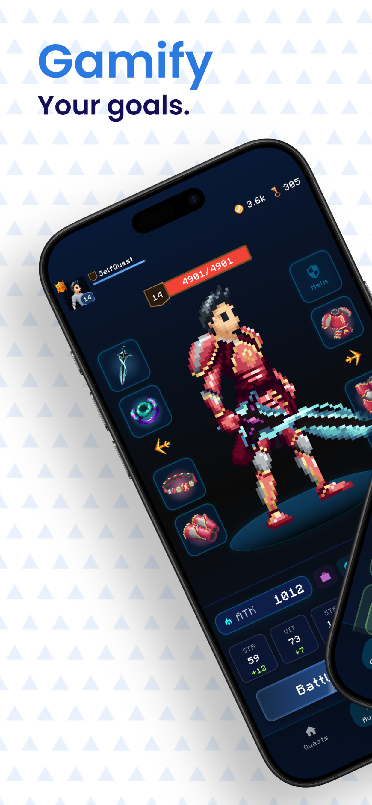
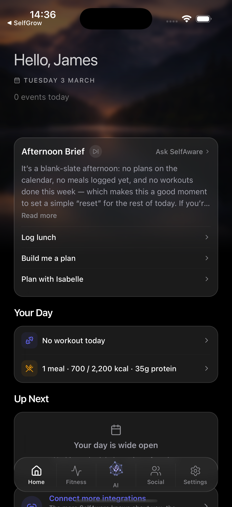
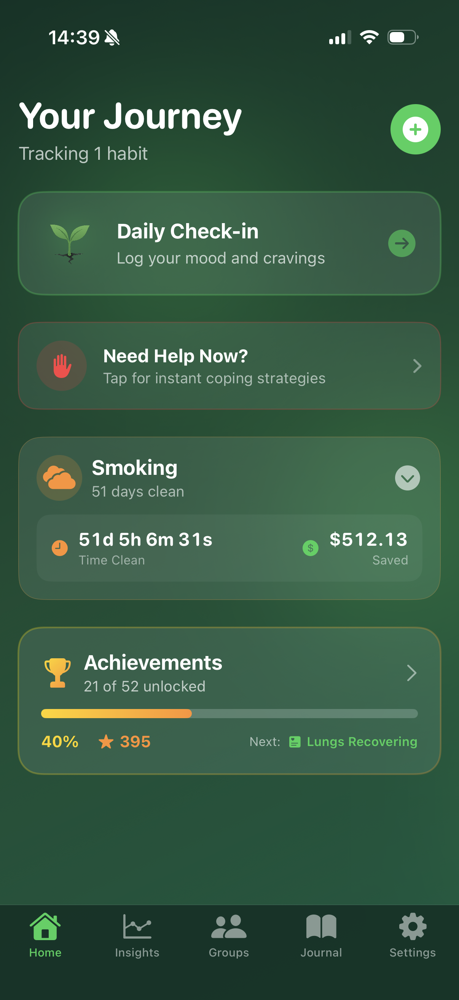

Small beginnings.
Meaningful milestones.
1.3M+SelfQuest downloads
100KDaily users reached
0 → 1Idea to product, end to end
01 / Selected work
Built with purpose.
A few things I’ve taken from
“what if” to working software.
SELFQUEST / FITNESS, REIMAGINED

REAL-LIFE EFFORT. IN-GAME PROGRESS.
01 / Founder & lead engineer
SelfQuest.
Making self-improvement
feel like an adventure.
A fitness app that turns real-world effort into RPG progression. I
built and grew the product from scratch, owning everything from
the mobile experience to the backend and community.
1.3M+downloads across iOS & Android
Inside the build +
A shared Flutter codebase backed by ASP.NET Core on Azure.
Features include real-time multiplayer with SignalR, social
groups, subscriptions with RevenueCat, and analytics to guide
product decisions.
My role spans product design, development, deployment and
community-led growth.
Visit SelfQuest ↗
AI, WITH A HUMAN PURPOSEWhat’s next?
SelfAware
Personal product
An AI-first personal assistant that connects conversation, context
and the things you need to get done.
Explore the engineering +
Built with Expo and TypeScript. Combines streaming
conversations, retrieval with pgvector, multimodal input and
custom MCP tools for external integrations.
View an app screen ↗
BETTER HABITS. TOGETHER.

SelfGrow
Personal product
A native iOS app that makes breaking habits a shared journey, with
social accountability at its heart.
Explore the engineering +
An offline-first experience with a sync queue and
local-to-cloud migration. Supabase Realtime supports social
accountability, with home screen widgets and Sign in with
Apple.
View an app screen ↗
02 / The journey
Always building.
Always learning.
From engineering teams to founding my own products. A career
shaped by curiosity and getting things shipped.
View full résumé ↗
CURRENTNow
Allied
Software engineering
Contributing across modern web applications, AI tooling, data
workflows and infrastructure in the defence sector.
Selected technologies only. Project details remain confidential.
MAR 2024 — PRESENT
Self Platform
Founder & lead engineer
Building SelfQuest, SelfAware and SelfGrow. Taking products from
concept through design, engineering, launch and growth across
Flutter, React Native and SwiftUI.
NOV 2025 — FEB 2026
Nuremi
Lead software engineer & technical consultant
Led the architecture, UX and implementation of an AI concierge
and interactive map app. Built with React Native, Supabase,
Claude and retrieval using pgvector.
OCT 2022 — OCT 2024
Siemens
Full stack software engineer
Developed manufacturing applications with C#, Blazor, .NET and
SQL Server. Built interfaces, REST APIs and backend services in
an Agile team using Azure DevOps.
AUG 2021 — SEP 2022
J2 Innovations
Apprentice support engineer
Supported the FIN Stack building management system, managing
engineering issues and helping users resolve problems.
03 / The toolkit
Across the whole stack.
The right tools for the problem.
From the interface to the
infrastructure.
01
Web & interfaces
TypeScript · React · Next.js · TanStack · Tailwind CSS · Blazor
02
Mobile experiences
Flutter · Dart · React Native · Expo · SwiftUI · WidgetKit
03
AI & automation
OpenAI · Claude · MCP · RAG · pgvector · Temporal
04
Backend & infrastructure
C# · .NET · Python · PostgreSQL · Supabase · Azure · Docker ·
Terraform
jk✳CURIOUS BY DEFAULT.
04 / A little about me
An engineer’s mind.
A founder’s instinct.
I’m James. I like turning an idea into something useful, then
staying close to it as it grows. That means caring as much about how
a screen feels as how the system behind it behaves.
Building my own apps has taught me to think beyond the code: listen
to users, make decisions, and keep improving. Working in engineering
teams brings that same curiosity to a different scale.
2024 — 2025Founders University
Selected for the 12-week founder accelerator.
2022 — 2024Ada College of Technology
Two years of a computer engineering apprenticeship / degree.